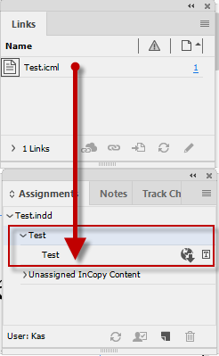

Assignment
How to move unassigned story to an assignment (for InCopy)
Question: I want to add a story to a new assignment with JavaScript. I found out how to create an assignment, and how to make a icml and icma document. However, it comes in unassigned InCopy items, and I can't find a way to place it into my new assignment.
Answer: In my opinion, this is one of those rare occasions when functionality available in UI is unavailable to script. But I think it's possible to workaround this isue like so:
var doc = app.activeDocument;
if (app.selection.length == 0 || app.selection[0].constructor.name != "TextFrame") exit();
var textFrame = app.selection[0];
var assignmentFile = new File("~/Desktop/Test.icma");
var incopyFile = new File("~/Desktop/Test.icml");
var assignment = doc.assignments.add(assignmentFile, undefined, false, {name: "Test"});
var unassignedContent = doc.assignments.item("Unassigned InCopy Content");
textFrame.texts[0].exportFile(ExportFormat.INCOPY_MARKUP, incopyFile);
unassignedContent.assignedStories[0].move(LocationOptions.AT_END, assignment);
assignment.update();
assignment.update();
The code above was adapted to CC 2018; below is the original code for CS3.
var doc = app.activeDocument;
if (app.selection.length == 0 || app.selection[0].constructor.name != "TextFrame") exit();
var textFrame = app.selection[0];
var assignmentFile = new File("~/Desktop/Test.inca");
var incopyFile = new File("~/Desktop/Test.incx");
var assignment = doc.assignments.add("Test", assignmentFile, {name:"Test"});
var unassignedContent = doc.assignments.item("Unassigned InCopy Content");
textFrame.texts[0].exportFile(ExportFormat.INCOPY_DOCUMENT, incopyFile);
unassignedContent.assignedStories[0].move(LocationOptions.AT_END, assignment);
assignment.update();
